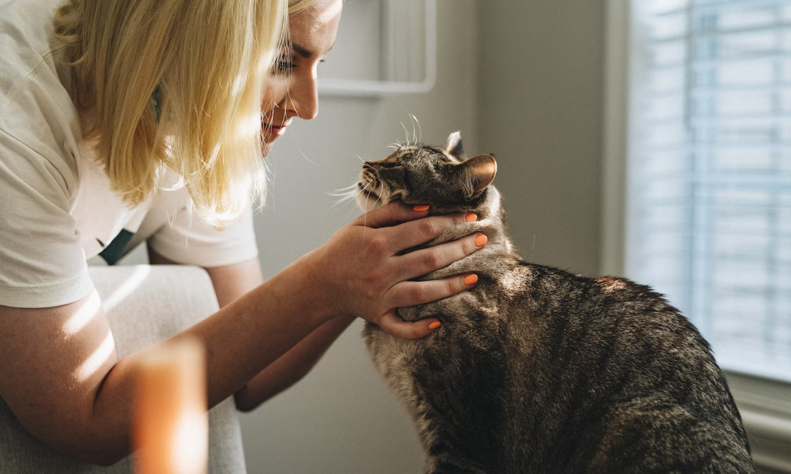

If you need someone to come into your home and care for your beloved furry family members while you're away, you want to find a trustworthy and reliable service. But with so many options out there for pet care assistance, how do you choose the right one for your needs?
This guide will explore the benefits of in-home pet care, what to look for in a qualified service, key questions to ask, and tips to ensure you select a provider that aligns with your needs and gives your pets the best care possible.
Why Consider In-Home Pet Care?
In-home pet care, where a professional pet sitter comes to your home to care for your animals in their familiar home environment, offers some great advantages:
Reduced Stress
Many pets experience significant anxiety and stress when they leave home to stay at a kennel or vet's office. In-home care allows your pet to stay comfortable in their own space.
Health Benefits
Avoiding stressful boarding kennels can benefit pet health, especially for elderly or anxious animals. In-home care may also be necessary for pets with health issues that require special attention.
One-on-One Attention
In-home caretakers can provide dedicated one-on-one attention, care, and affection to your pet, unlike boarding facilities where staff have to juggle many pets.
Maintain Routines
Keeping pets in their home environment and schedules maintains a sense of normalcy and stability for important routines like feedings, exercise, playtime, etc
Home Security
Having a caretaker regularly check on your home provides peace of mind and may deter crime while you're away.
Flexible Scheduling
In-home pet care offers more flexibility to book last-minute or extended services than boarding kennels, which have rigid check-in/check-out policies.
Welcoming Other Service Providers
Pet sitters can admit other service providers into your home while you're away, such as contractors, lawn care, house cleaners, etc.
For minimizing disruption and keeping your pet happy and healthy, in-home pet care can be an excellent option!
What to Look for in an In-Home Pet Care Provider
Experience and Comfort Working with Animals
Ideally, choose sitters who have extensive experience in caring for pets and are comfortable handling medical needs, behaviors, feeding, medications, and animal first aid. Veterinary technician credentials are a plus!
Thorough Pet Care Training
Reputable services thoroughly train all staff to follow established protocols for pet care tasks, home entry/exit, emergency response, and more. Rigorous procedures ensure consistency and quality.
Attention to Safety
The provider should conduct background checks and vet all staff. Ensure that they are adequately insured and bonded to protect you legally. Look for proactive safety measures as well.
Communication
Find a service that is highly communicative before, during, and after service. Look for responsiveness in scheduling, answering questions, providing photo updates, and submitting detailed visit reports.
Senior Pet Experience
If you have geriatric or special needs pets, seek out providers with specific senior pet care training to meet their health and mobility considerations.
A Caring Approach
The right provider will display genuine compassion and care when interacting with clients and pets. Look for non-rushed consultations and attention to pet personalities and preferences.
Reasonable Policies
Review policies around cancellation, medications, key handling, inclement weather, and emergencies to ensure they work for you. Look for flexibility when reasonable.
Strong Reputation
Check the reviews and testimonials from past clients to gauge satisfaction. Reputable sitters earn consistently glowing recommendations.
Trustworthy Staff
All staff who enter homes should be screened, professional, trained, and fully accountable for their actions. Trust is a must!
Choosing an in-home provider that checks all these boxes gives you reassurance while away!
Key Questions to Ask Before Booking
Choosing an in-home provider that checks all these boxes gives you reassurance while away!
Are All Your Staff Pet First Aid/CPR Certified?
This critical training prepares them to properly respond in an emergency situation. At a minimum, main caretakers should be certified.
What is Your Staff Screening Process?
Reputable services conduct intensive background checks, interviews, and reference checks to ensure responsible pet care providers who will respect your home.
Do You Have Detailed Service Protocols and Training?
Established service protocols for feeding, medications, exercise, communication, etc., ensure consistency and quality. Ongoing training is a must to refresh skills.
Are You Insured and Bonded?
This protects you from liability if a pet or home accident occurs. Verify appropriate business insurance coverage.
What is Your Contingency or Backup Plan?
Get details on their protocols if a scheduled caretaker cannot make a visit due to illness, emergency, or inclement weather.
How Will You Maintain Open Communication?
Clarify expectations for daily update photos, text messaging access, report cards after visits, etc., to stay informed
Doing your due diligence ensures you select a pet sitter that meets your needs and provides exemplary in-home care.
Tips for Evaluating an In-Home Pet Care Service
Follow these tips when researching providers:
Search Pet Sitter Directories
Directory sites like PetSits.com allow you to search local sitters by location, experience, and services offered. Review profile details and qualifications
Professional Affiliations Matter
Look for providers who belong to associations like Pet Sitters International (PSI), which require adherence to industry best practices on safety, training, and ethics.
Meet for a Consultation
Many services offer free in-home consultations to meet you and your pets before booking. This is invaluable for getting to know them and assessing their compatibility.
Do a Trial Run First
Consider booking a trial day or overnight service before an extended booking so you can evaluate their service and see how your pets react.
Read Reviews
Check Google/Yelp ratings and browse website testimonials. Many satisfied clients validate quality care and professionalism.
Ask for References
Speaking to past clients provides useful insights into their pet care competence, friendliness, communication, and trustworthiness.
Confirm Policies
Review policies on scheduling, cancellations, emergencies, keys, medications, and more to ensure they align with your needs and comfort level.
Trust Your Gut
Go with your instincts during consultations and initial interactions. Your pets' well-being is paramount, so any red flags warrant caution.
GDoing diligent research sets you up for success in partnering with an in-home pet care service that meets your needs!
Indicators of a High-Quality In-Home Pet Care Provide
Signs that suggest you have found an excellent pet sitter include:
- Deep experience caring for all types of pets, including special needs
- Contingency backup plans if a sitter cannot make a scheduled visit
- Thorough home consultation and pet introductions
- Careful adherence to your care instructions and home rules
- Regular updates with photos, texts, or written report cards after every visit
- Employment and training of staff in proper pet first aid
- Simple sign-in/sign-out logs and prompt return of house keys
- Genuine affection and patience for your pets
- Bonding and insurance for protection and accountability
- Outstanding references and reviews
- Prioritizing these indicators will help you identify the premier in-home pet care option for providing the best care possible when you can't be home!
Prioritizing these indicators will help you identify the premier in-home pet care option for providing the best care possible when you can't be home!
Partner with Vets ASAP for Unparalleled In-Home Pet Care
Vets ASAP sets the highest standard for fully customized, compassionate home pet care. Our experienced team of pet lovers treats you like family while providing insider care as you would yourself.
Why Vets ASAP Stands Out
- Our pet sitters are rigorously screened and trained above and beyond the industry standard. You can trust us fully.
- We are meticulous about following your detailed instructions to maintain your pets' routines, diet, exercise, and care.
- Our team is available for daily visits or 24-hour care - perfect for extended travel.
- We gladly administer medications, handle mobility issues, manage behaviors, and assist with grooming - whatever your pets' needs are.
- Our vet tech expertise allows us to monitor health closely and respond to issues properly.
- We provide photo updates, detailed visit recaps, and an open line of communication 24/7.
Let Vets ASAP make pet care, home care, and pet transportation completely stress-free, whether you're away for a quick trip or a month-long adventure. Experience our passion for pets firsthand - contact us today to get started!
Key Takeaways on Choosing In-Home Pet Care
- In-home pet sitting reduces stress, maintains health, and provides dedicated one-on-one attention for your pets compared to boarding options.
- Look for experienced, compassionate providers with rigorous training, protocols, screening, and pet first aid competency when selecting a service.
- Ask questions upfront about staffing, safety, communication, and emergency response to determine a good fit.
- Indicators of high-quality providers include glowing references, professional affiliations, thorough consultations, and training standards.
- Do a trial run with a day or overnight booking before extended services to evaluate care.
- Partnering with reputable, trustworthy pet sitters gives you ultimate peace of mind while traveling or away.
Knowing your pets are being cared for by a qualified, loving caretaker in the comfort of your home makes any trip better. Use these tips to choose the ideal pet sitter to meet your needs!